Luminous spielt die Musik ab, die schon auf deinem Computer liegt. Zum Start ist keine Mediathek nötig.
Jetzt etwas abspielen
•
Unter Musik abspielen die Option Dateien öffnen oder Ordner abspielen wählen.
•
Oder Dateien und Ordner auf das Fenster ziehen.
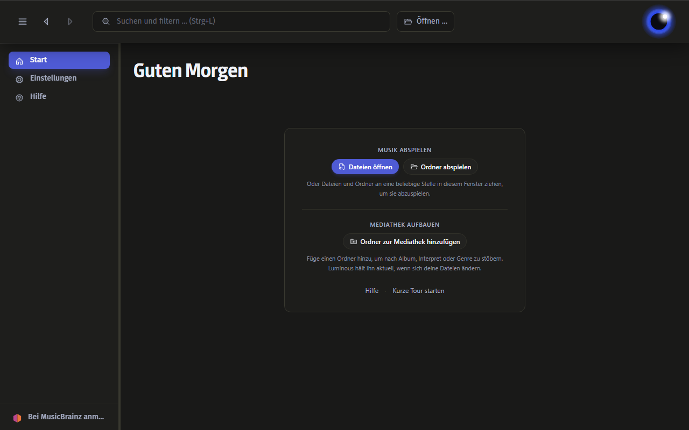
Mediathek aufbauen
1
Unter Mediathek aufbauen die Option Ordner zur Mediathek hinzufügen wählen oder in Einstellungen → Quellen einen Ordner hinzufügen.
2
Luminous durchsucht den Ordner und behält ihn danach im Blick. Neue, verschobene und umbenannte Dateien werden automatisch aktualisiert.
3
Die Musik unter Sammlung in der Seitenleiste durchsuchen.
Start
•
Start zeigt eine laufend aktualisierte Übersicht über deine Mediathek und dein Hörverhalten.
•
Top-Alben reiht Alben nach den in dieser Woche gespielten Minuten. Ein Abzeichen Wiedereinstieg kennzeichnet ein Album, das wieder in der Rangliste steht.
•
Mit Woche beginnt am in Einstellungen → Allgemein festlegen, mit welchem Tag die Woche beginnt.
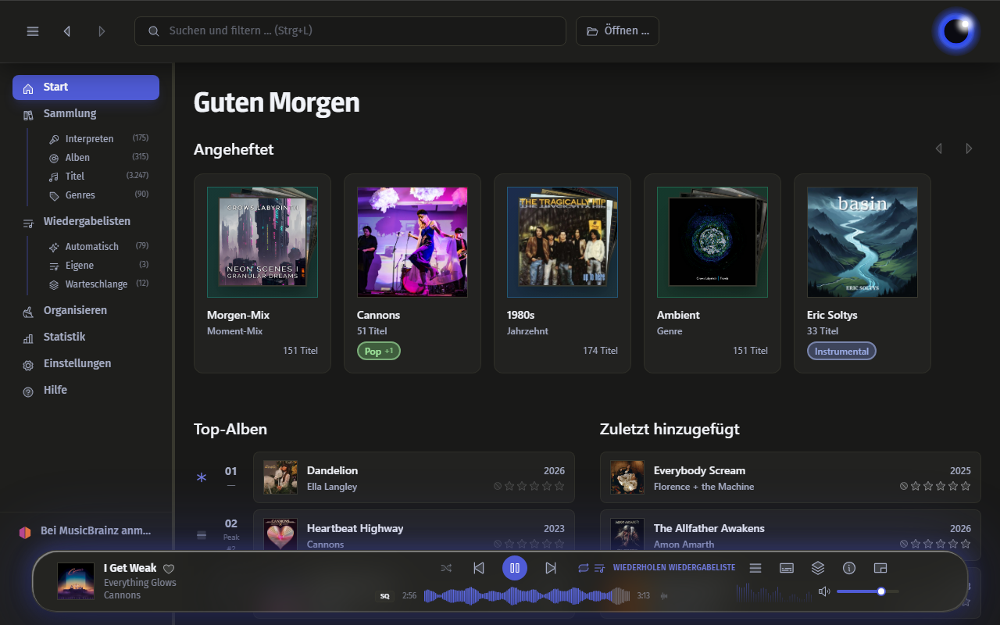
Rundgang starten
•
Neu bei Luminous? Ein kurzer Rundgang stellt die Oberfläche vor.
•
Jederzeit wiederholbar mit Funktionsrundgang neu starten unter Hilfe.
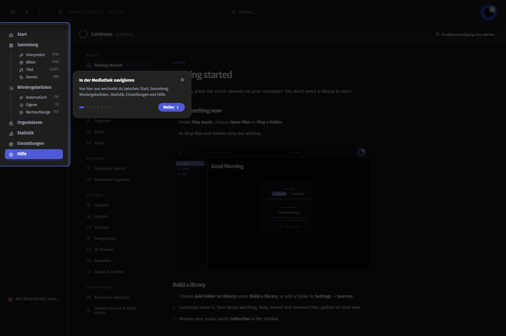
Grundlagen
Deine Sammlung
Sammlung in der Seitenleiste bietet vier Ansichten: Interpreten, Alben, Titel und Genres. Jede zeigt oben rechts eine Anzahl und eine Sortiersteuerung.
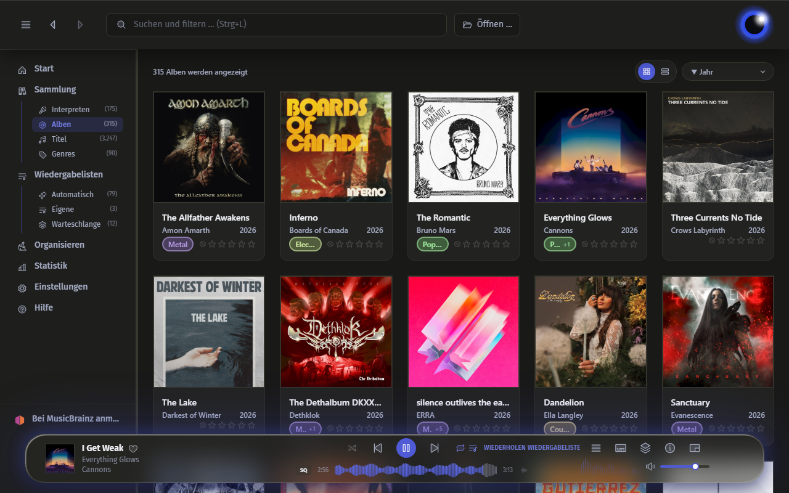
Titel
•
Die gesamte Mediathek als sortierbare Tabelle anzeigen.
•
Mit der rechten Maustaste auf eine Spaltenüberschrift klicken, um die angezeigten Felder auszuwählen, z. B. Anzahl der Wiedergaben und Anzahl der Überspringungen.
•
Den rechten Rand einer Spaltenüberschrift ziehen, um die Breite der Spalte zu ändern. Doppelklick auf den Rand setzt die Breite zurück.
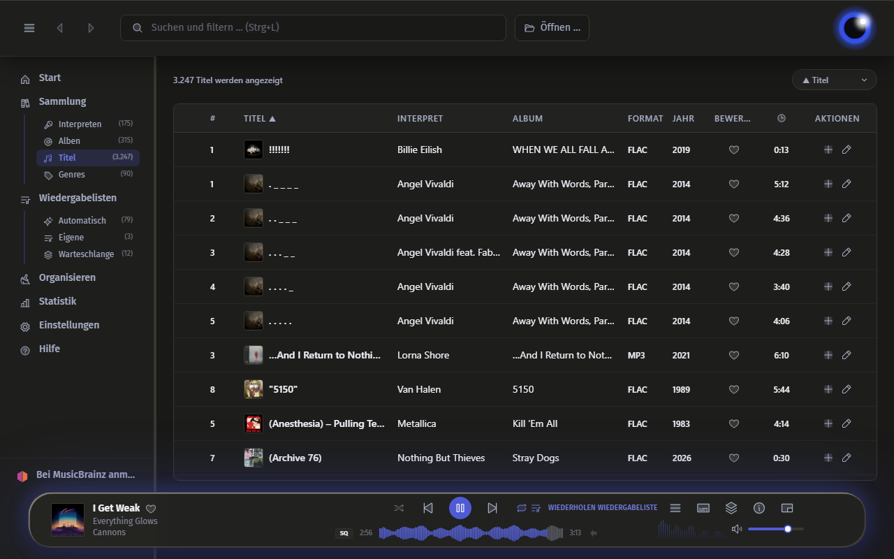
Genres
•
Jedes Genre ist eine Karte. Die Titelanzahl schließt seine Untergenres ein.
•
Einen Untergenre-Chip auf eine andere Karte ziehen, um ihn zu verschieben, oder den Griff einer Karte ziehen, um das ganze Genre zu einem Untergenre zu machen.
•
Mit der rechten Maustaste auf einen Chip oder eine Kartenüberschrift klicken und Umbenennen, Zum Genre der obersten Ebene machen oder Löschen (bei allen Titeln) wählen.
•
Auf das Farbfeld einer Karte klicken, um ihre Farbe zu ändern.
•
Auf eine Karte oder einen Chip klicken, um die zugehörige Auto-Wiedergabeliste zu öffnen.
•
Tags, die auf Interpretenseiten hinzugefügt werden, erhalten eigene Karten unter Interpreten-Tags, oberhalb der Titel-Genres.
•
Oben rechts zwischen Karten- und Zeilenansicht wechseln und nach Name oder Titelanzahl sortieren.
•
Titel ohne Genre werden unter Kein Genre zusammengefasst.
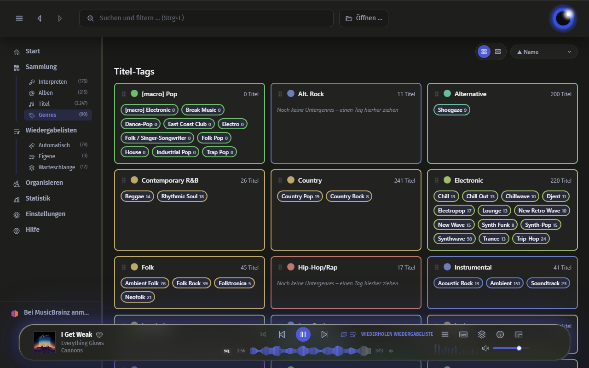
Alben
•
Ein Album öffnen, um seine Titel zu sehen. Der Seitenbereich zeigt Format, Bitrate, Abtastrate und Lautheit der wiedergegebenen Datei.
•
Auf + klicken, um das Album oder einen Titel zur aktiven Wiedergabeliste hinzuzufügen (der Warteschlange, sofern keine andere gewählt ist).
•
Auf den Stift klicken, um Album-Tags bearbeiten zu öffnen und Titel, Interpret, Genre oder Jahr aller Tracks auf einmal zu korrigieren.
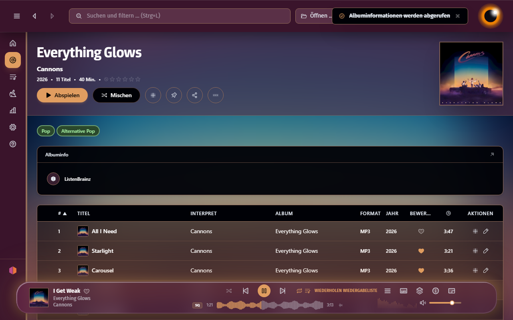
Tags bearbeiten
•
Auf den Stift eines Titels klicken, um Titel-Tags bearbeiten zu öffnen.
•
Interpret, Albuminterpret, Komponist und Genre nehmen mehrere Werte an. Nach jedem Wert die Eingabetaste drücken.
•
Cover entfernen löscht das eingebettete Cover des Titels.
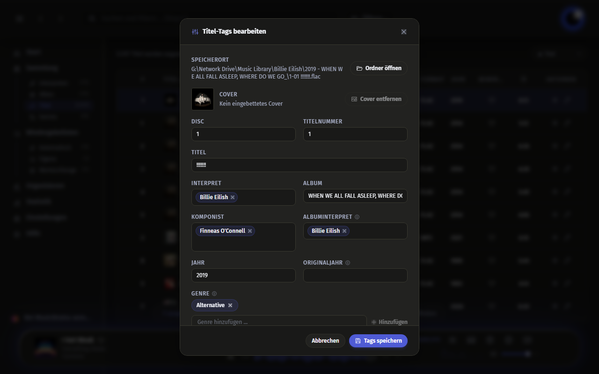
Interpreten
•
Eine Interpretenseite listet Veröffentlichungen unter Diskografie: Alben, EPs und Singles, danach Wiedergabelisten mit dem Interpreten.
•
Auf Bearbeiten klicken, um eine Biografie, eine Website und Links wie Bandcamp, Spotify oder Instagram hinzuzufügen. Sie erscheinen im Bereich „Über“ des Interpreten.
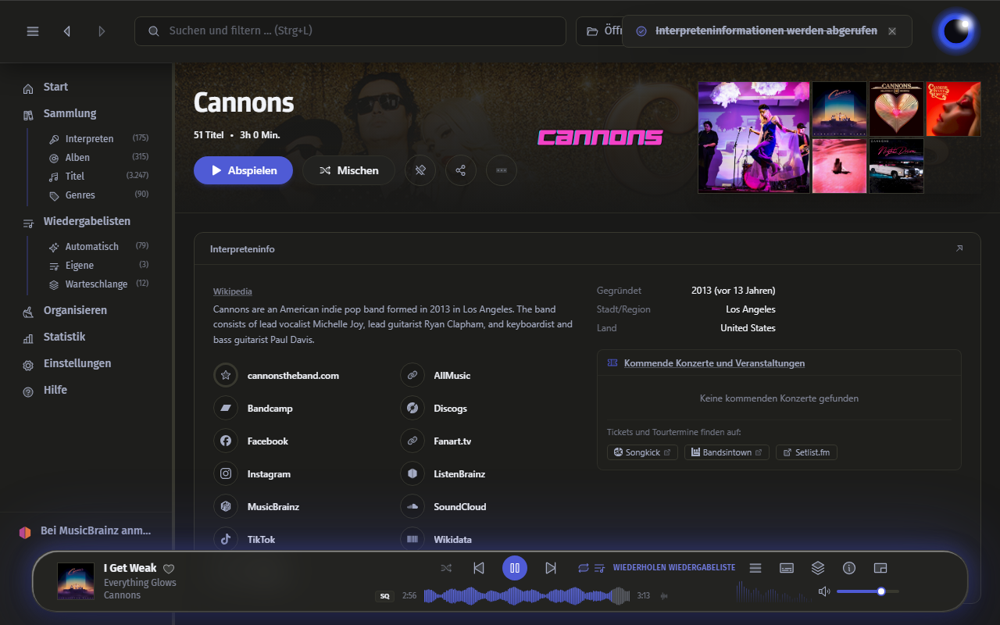
Grundlagen
Suchen & Stöbern
Eine einzige Suchleiste findet Titel, Alben, Interpreten und Wiedergabelisten.
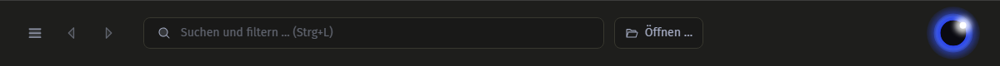
1
StrgL drücken oder auf die Suchleiste klicken.
2
Mit der Eingabe beginnen. Die Ergebnisse erscheinen sofort.
3
Mit den Pfeilen „Zurück“ und „Vor“ neben der Suchleiste die letzten Schritte nachvollziehen.
•
Auf Öffnen … (StrgO) klicken, um Dateien von beliebiger Stelle auf dem Computer abzuspielen.
•
Auf das Luminous-Logo klicken, um sein Pulsieren zur Musik ein- oder auszuschalten.
Die Wiedergabeleiste liegt am unteren Fensterrand, solange Musik läuft.
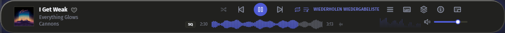
Wiedergabeleiste
•
Auf das Cover klicken, um den immersiven Modus zu öffnen (Strg2).
•
Auf das Herz oder die Sterne klicken, um den Titel zu bewerten. Den Stil in Einstellungen → Allgemein wählen.
•
Auf die Wellenform klicken, um innerhalb des Titels zu springen. Die Schaltfläche daneben wechselt zu Frequenzbändern: Blau für Bässe, Bernstein für Mitten, Weiß für Höhen.
•
Zufallswiedergabe wechselt zwischen Aus, Alles und:
– Innerhalb des Albums: Alben der Reihe nach, Titel innerhalb jedes Albums gemischt.
– Alben: Alben gemischt, Titel der Reihe nach.
– Interpreten: ein Interpret nach dem anderen, Interpreten zufällig gewählt.
•
Wiederholen wechselt zwischen Aus, Titel, Album und Wiedergabeliste.
•
Die Schaltflächen rechts öffnen:
das Titelmenü
die Songtexte
die Warteschlange
den Infobereich (StrgI)
den Miniplayer (StrgM)
•
Medientasten und die Mediensteuerung des Systems funktionieren auch, wenn Luminous nicht im Vordergrund ist.
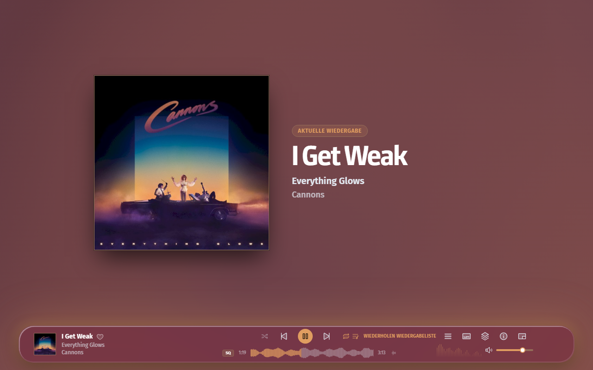
Miniplayer
•
Den Mauszeiger über den Miniplayer bewegen, um die Steuerung einzublenden und den Titel zu bewerten.
•
Am oberen Rand ziehen, um ihn zu verschieben.
•
Mit der Songtext-Schaltfläche zwischen Cover und Live-Songtext umschalten.
•
Unten rechts auf Vollständiges Fenster wiederherstellen (StrgM) klicken, um zurückzukehren.
Im Ruhezustand
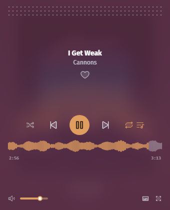
Beim Darüberfahren
Grundlagen
Wiedergabelisten
Wiedergabelisten gibt es in drei Arten:
•
Eigene: selbst erstellen, indem Titel hineingezogen werden.
•
Intelligent: Regeln festlegen, etwa „Genre ist Rock und Jahr ist nach 2015“, und Luminous hält die Liste aktuell.
•
Automatisch: Genre-, Jahrzehnt- und BPM-Wiedergabelisten, die Luminous selbst erstellt, mit bis zu 25 Titeln, die täglich aktualisiert werden. Jede erscheint, sobald 25 Titel passen. Auf Wiedergabeliste aktualisieren klicken für eine neue Auswahl.
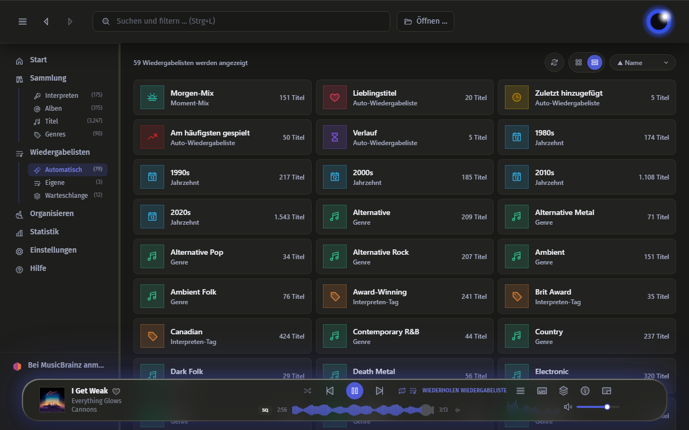
Titel hinzufügen
•
Auf + neben einem Titel oder Album klicken, um es zur Warteschlange hinzuzufügen.
•
Soll es stattdessen zu einer anderen Wiedergabeliste hinzugefügt werden, dort zuerst auf Aktivieren klicken.
•
Dateien oder einen Ordner auf das Fenster ziehen, um die Warteschlange zu ersetzen und abzuspielen. Bei gedrückter Taste Umschalt werden sie stattdessen ans Ende angehängt.
Intelligente Wiedergabelisten
•
Auf Neue intelligente Wiedergabeliste klicken, Regeln hinzufügen, dann benennen und speichern.
•
Mit Regeln bearbeiten lassen sie sich später ändern.
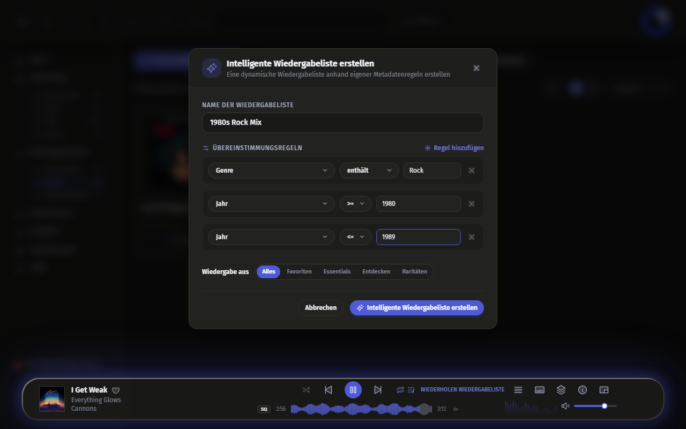
BPM-Wiedergabelisten
BPM-Wiedergabelisten nutzen den BPM-Tag jedes Titels. Luminous misst das Tempo nicht, daher werden Titel ohne BPM-Tag nicht aufgenommen. Eigene Bereiche lassen sich mit einer intelligenten Wiedergabeliste erstellen.
Kategorie
BPM-Bereich
Ruhig (BPM)
60–90
Mittel (BPM)
90–115
Schnell (BPM)
115–130
Energiegeladen (BPM)
130–150
Extrem (BPM)
150+
Eine Wiedergabeliste verwalten
•
Doppelklick auf den Namen benennt sie um.
•
Zeilen ziehen, um sie neu anzuordnen. Mehrere auswählen, um sie gemeinsam zu verschieben.
•
Auf eine Spaltenüberschrift klicken, um zu sortieren, oder im Filterfeld tippen, um die Liste einzugrenzen.
•
Mit den Entfernen-Schaltflächen doppelte oder nicht verfügbare Titel entfernen und mit Wiedergabeliste leeren die Liste leeren.
•
Mit der rechten Maustaste auf eine Spaltenüberschrift klicken, um die Spalte Hinzugefügt am einzublenden.
Import & Export
•
Wiedergabelisten im Format .m3u, .m3u8, .pls und .xspf importieren oder exportieren.
•
Beim Exportieren Relative (portable) Dateipfade verwenden wählen, damit die Wiedergabeliste auch in einem anderen Ordner oder auf einem anderen Computer funktioniert.
Grundlagen
Statistik
Statistik zeigt dein Hörverhalten, auf deinem Computer berechnet und nie irgendwohin gesendet.
•
Letzte 7 Tage, Letzte 28 Tage oder Letztes Jahr wählen.
•
Deine Top-Interpreten, -Alben, -Titel und -Genres ansehen. Zum Öffnen darauf klicken.
•
Die Heatmap zeigt die pro Tag gehörten Minuten, dazu deine Aktuelle Serie und deine Längste Serie.
•
Tageszeit zeigt, wann du am meisten hörst.
•
Soll etwas ausgenommen werden, mit der rechten Maustaste an beliebiger Stelle darauf klicken und Nicht in Statistik einbeziehen wählen.
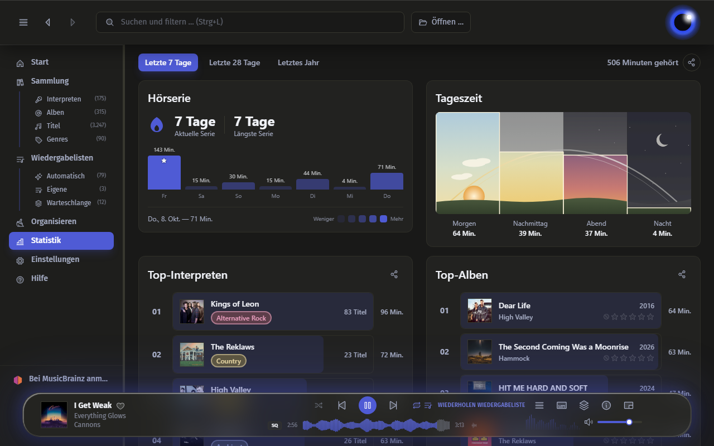
Grundlagen
Songtexte
Songtexte in der Wiedergabeleiste einschalten. Die aktuelle Zeile wird passend zur Musik hervorgehoben.
•
Auf eine Zeile klicken, um dorthin zu springen.
•
Erneut abrufen sucht erneut nach Songtexten.
•
Bearbeiten korrigiert Text oder Zeitangaben.
•
Songtexte ohne Zeitstempel werden als reiner Text angezeigt.
•
Bei einem Instrumental Als Instrumental markieren wählen, damit Luminous die Suche einstellt.
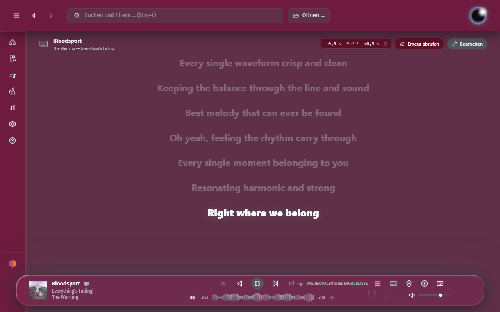
Erweitert
Erweiterte Suche
In der Suchleiste Begriffe der Form field:value eingeben, um die gesamte Mediathek zu filtern. Beispiel: genre:rock rating:>=4 findet Rocktitel mit mindestens 4 Sternen.
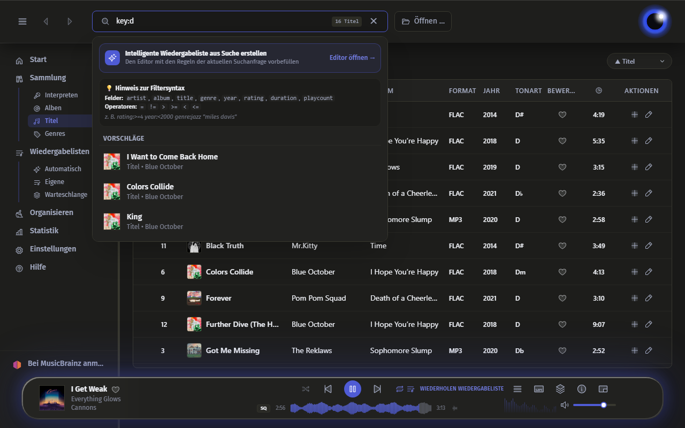
Syntax
•
Ein Textfeld ohne Operator bedeutet enthält: genre:rock trifft auf jedes Genre zu, das „rock“ enthält.
•
Ein Zahlenfeld ohne Operator bedeutet genau: year:1994 trifft nur auf 1994 zu.
•
Mehrere Begriffe müssen alle zutreffen: rating:>=4 year:<2000 genre:rock.
•
Wörter ohne Doppelpunkt durchsuchen Titel, Interpret und Album: rating:>=4 "tom cochrane".
•
Werte mit Leerzeichen in Anführungszeichen setzen: artist:"tom cochrane". Bei Feldnamen wird die Groß- und Kleinschreibung nicht beachtet.
Operatoren
Symbol
Bedeutung
=
gleich
!=
ungleich
>
größer als
>=
größer oder gleich
<
kleiner als
<=
kleiner oder gleich
(keiner)
enthält (Text) / gleich (Zahl)
Felder
Jedes Feld funktioniert in der Suchleiste und als Regel für intelligente Wiedergabelisten.
Feld (Aliasse)
Typ
Trifft zu auf
artist
Text
Interpret (ersatzweise Albuminterpret)
artist_tag
Text
Interpreten-Tag
album_artist
Text
Nur Albuminterpret
album
Text
Albumtitel
title
Text
Titelname
genre
Text
Genre
composer
Text
Komponist
key / initial_key
Text
Tonart (z. B. „D“, „Am“, „D♭“)
bpm
Zahl
Schläge pro Minute
year
Zahl
Erscheinungsjahr
originalyear / original_year
Zahl
Ursprüngliches Erscheinungsjahr (im Unterschied zur Neuauflage)
rating / stars
Zahl
Sternebewertung, 0–5
playcount / plays
Zahl
Anzahl der Wiedergaben
skipcount / skips
Zahl
Anzahl der Überspringungen
lastplayed / last_played
Zahl
Zeitstempel der letzten Wiedergabe (Unix-Sekunden)
added
Zahl
Zeitstempel des Hinzufügens (Unix-Sekunden)
track / track_number
Zahl
Titelnummer
disc / disc_number
Zahl
Disc-Nummer
bitrate
Zahl
Bitrate (kbit/s)
samplerate / sample_rate
Zahl
Abtastrate (Hz)
bitdepth / bit_depth
Zahl
Bittiefe
channels
Zahl
Anzahl der Kanäle
compilation
0/1
Compilation-Kennzeichen
duration / length
Dauer
Länge des Titels – siehe unten
duration akzeptiert Sekunden (duration:>180), MM:SS (duration:>3:30) oder H:MM:SS (duration:<1:02:03).
Eine Suche als intelligente Wiedergabeliste speichern
Sobald die Suche einen Begriff der Form field:value enthält, im Dropdown auf Editor öffnen → klicken. Jeder Begriff wird zu einer Regel; weitere hinzufügen, die Wiedergabeliste benennen und speichern.
Beispiele
Ziel
Suchanfrage
Rocktitel mit mindestens 4 Sternen von vor 2000
rating:>=4 year:<2000 genre:rock
Titel in der Tonart D
key:d
Titel mit hohem Tempo (120–130 BPM)
bpm:>=120 bpm:<=130
Freitext und Felder gemischt
rating:>=4 "tom cochrane"
Nur Compilation-Alben
compilation:1
Titel länger als 3:30
duration:>3:30
Erweitert
Erweitertes Organisieren
Ein eigenes Muster lässt sich mit Benutzerdefiniert auf der Seite Organisieren.
Mustervariablen
Mit eigenem Text kombinieren. Einen Teil in { } setzen, damit er entfällt, wenn der Titel keinen Wert hat; innerhalb der Klammern mit / abschließen, um daraus einen Ordner zu machen.
Variable
Wird ersetzt durch
%albumartist
Der Hauptinterpret des Albums
%artist
Der Interpret des Titels
%album
Albumtitel
%disc
Disc-Nummer
%track
Titelnummer
%title
Titelname
%year
Erscheinungsjahr
%genre
Genre
%track3
Titelnummer, auf drei Stellen aufgefüllt
%rawtrack
Titelnummer genau wie im Tag gespeichert, ohne Auffüllen
Beispiele
%disc-%track
2-07
Disc %disc
Disc 2
%year - %album
2019 - Reservoir
{%album/}
Fügt einen Ordner mit dem Albumnamen hinzu, nur wenn der Titel einen hat
{%disc-}%track
Lässt das „1-“ weg, wenn es keine Disc-Nummer gibt: 07 oder 1-07
{%track }%title
Fügt „07 “ vor dem Titel hinzu, nur wenn es eine Titelnummer gibt
{%track-}%title
Fügt „07-“ vor dem Titel hinzu, nur wenn es eine Titelnummer gibt
Einstellungen
Allgemein
•
Language / Sprache: Sprache der Menüs, Schaltflächen, Meldungen und dieses Handbuchs.
•
Woche beginnt am: Sonntag oder Montag, für wöchentliche Ranglisten und Statistiken.
•
Art der Titelbewertung: ein Herz, 5 Sterne oder beides.
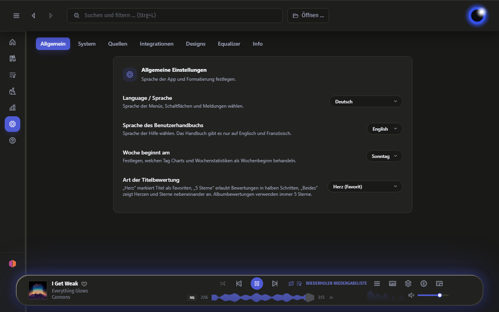
Einstellungen
System
•
Luminous als Standard-Musikplayer festlegen (Windows): öffnet die Windows-Standard-Apps, um festzulegen, welche Dateitypen Luminous öffnet.
•
In den Infobereich minimieren: Beim Schließen des Fensters wird Luminous im Infobereich ausgeblendet. Mit der rechten Maustaste auf das Symbol klicken für „Wiedergabe/Pause“, „Nächster Titel“ und „Vorheriger Titel“.
•
Beim Anmelden starten: Luminous beim Anmelden starten.
•
Diagnosedaten exportieren: eine Protokolldatei der letzten Abstürze und Fehler speichern, um sie einem Fehlerbericht anzuhängen.
•
Speicherort der Daten: wo die Datenbank der Mediathek, der Cover-Cache und die Einstellungen liegen. Beim Windows-ZIP ist Portabler Modus aktiv und alles liegt in einem Ordner data neben der App. Musikordner auf demselben Laufwerk folgen ihm, wenn das Laufwerk auf einem anderen Computer einen neuen Buchstaben erhält. Unter Linux eine leere Datei namens portable neben das AppImage legen, um dasselbe zu erreichen.
•
Updates: nach einer neuen Version suchen und festlegen, was geschieht, wenn eine verfügbar ist. Installationen aus dem Microsoft Store aktualisieren sich selbst.
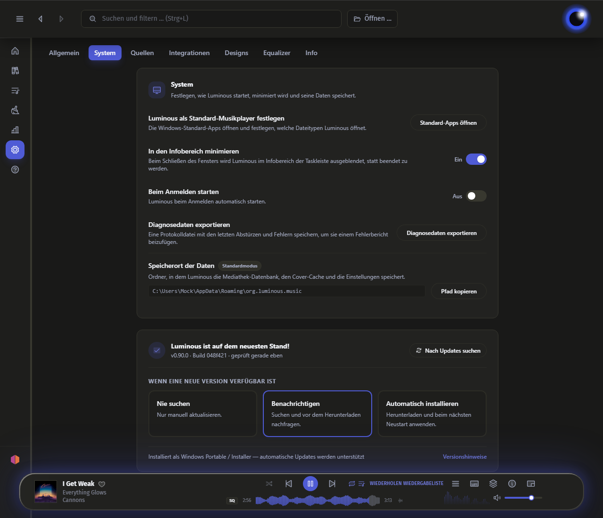
Einstellungen
Quellen
Ordner
•
Auf Ordner hinzufügen klicken, um einen Musikordner hinzuzufügen. Neue und geänderte Dateien erscheinen automatisch.
•
Echtzeitüberwachung von Ordnern ausschalten, um nur beim erneuten Durchsuchen nach Änderungen zu suchen.
•
Mediathek beim Start erneut durchsuchen prüft die Ordner bei jedem Start von Luminous.
•
Mediathek erneut durchsuchen sucht nach Änderungen; Vollständige Suche erzwingen liest alles neu ein.
•
Cover neben der Musik speichern speichert Cover als cover.jpg in Albumordnern und Interpretenfotos als artist.jpg. Vorhandene Ordnergrafiken werden nie überschrieben.
•
Wird ein Ordner als nicht verfügbar angezeigt, weil sich sein Laufwerksbuchstabe geändert hat oder die Musik verschoben wurde, auf Suchen … klicken und den neuen Speicherort wählen. Die Titel behalten ihre Wiedergabeanzahl, Bewertungen und Wiedergabelisten.
•
Um einen noch verfügbaren Ordner zu verschieben, auf Ordnerdetails bearbeiten und dann auf Speicherort ändern … klicken.
Remote-Musik
•
WebDAV-Remotezugriff: Streaming von Nextcloud, ownCloud, Synology und anderen WebDAV-Servern.
•
Medienserver: einen OpenSubsonic-Server wie Navidrome, Gonic oder LMS verbinden. Luminous synchronisiert dessen Mediathek und kann deine Wiedergaben zurückmelden.
•
Remote-Musik ist schreibgeschützt: Tag-Änderungen und Cover-Änderungen bleiben in Luminous.
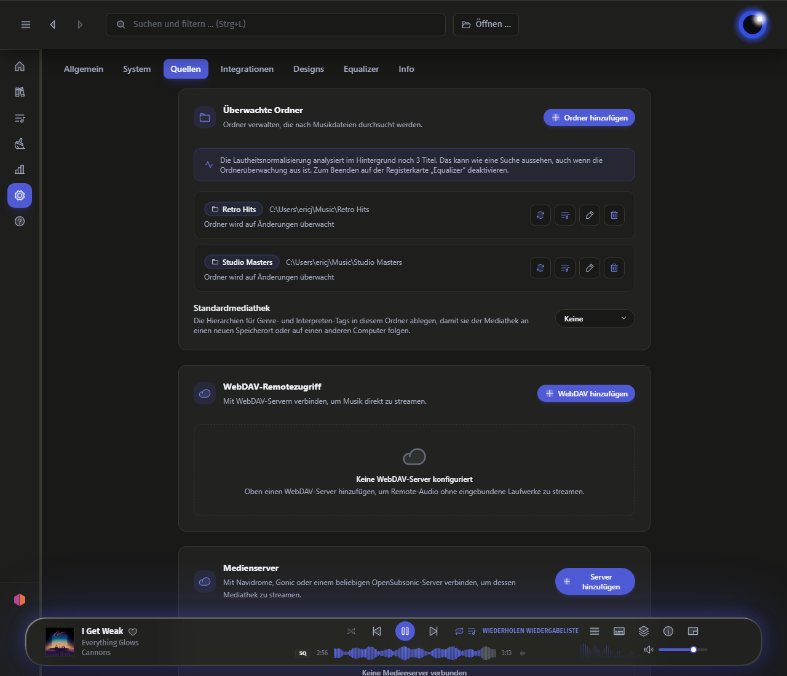
Einstellungen
Integrationen
Jede Integration ist optional. Jede lässt sich ausschalten, um diesen Teil von Luminous offline zu halten.
•
Online-Dienste: der Hauptschalter oben rechts. Auf Offline gestellt, sendet Luminous keine Anfragen an externe Dienste (Cover, Songtexte, Biografien, ListenBrainz, MusicBrainz-Anmeldung, Discord-Präsenz und Update-Suche); gespeicherte Songtexte und Cover werden weiter angezeigt, und deine Subsonic- und WebDAV-Mediatheken funktionieren weiter.
•
ListenBrainz Scrobbler: dein Benutzertoken einfügen, auf Prüfen und speichern klicken und dann das Scrobbling einschalten. Festlegen, ob auch Bewertungen gesendet werden. Die Übertragung von „Aktuelle Wiedergabe“ umschalten und das Scrobbling im Profil-Popup von MusicBrainz in der Seitenleiste pausieren.
•
Gesamtes Scrobbling pausieren (im Profil-Popup der Seitenleiste oder im Infobereich) beendet das Senden, ohne die Verbindung zu trennen. Offline gehörte Titel warten, bis auf Jetzt synchronisieren geklickt wird.
•
MusicBrainz Picard: Luminous findet Picard oder lässt dich danach suchen, damit Dateien in Picard geöffnet werden können.
•
Discord Rich Presence: auf Discord anzeigen, was gerade läuft. Die Discord-Desktop-App muss laufen.
•
fanart.tv: Interpretenfotos und weitere Cover abrufen, die Luminous lokal nicht findet. Den API-Schlüssel eingeben und auf Prüfen und speichern klicken. Ohne Schlüssel verwendet Luminous Wikidata-Bilder.
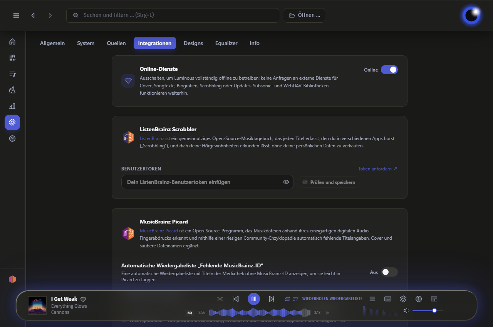
Grundlagen
Organisieren
Dateien anhand ihrer Tags umbenennen und verschieben. Es ändert sich nichts, bis auf Musik organisieren geklickt wird.
1
Ein Muster wählen: Standard, Alternativ oder Benutzerdefiniert, um ein eigenes zu schreiben. Die Baumansicht darunter zeigt eine Vorschau des Ergebnisses.
2
Ein Ziel wählen: den ursprünglichen Mediatheksordner oder Benutzerdefiniert ..., um einen anderen zu wählen.
3
Festlegen, ob zugehörige Dateien verschoben, Leerzeichen durch Unterstriche ersetzt und Buchstaben mit Akzenten umgewandelt werden.
4
Die Vorschau prüfen. Sie listet nur die Dateien auf, die verschoben werden, mit altem und neuem Speicherort.
5
Auf Musik organisieren klicken.
•
Automatisch organisieren oben rechts (oder in Einstellungen → Quellen) einschalten, um neue Titel oder Tag-Änderungen automatisch im Hintergrund umzubenennen und zu verschieben.
•
Bereinigen entfernt fehlende Titel, leere Ordner und doppelte Einträge.
Zu finden unter Einstellungen → Equalizer. Jede Änderung wirkt sofort, auch mitten im Titel.
10-Band
•
EQ aktivieren einschalten, dann eine Voreinstellung wählen oder eine eigene Kurve formen.
•
Einen Regler ziehen, um seine Frequenz anzuheben oder abzusenken, bis zu ±20 dB.
•
Die Vorverstärkung senken, wenn angehoben wird, damit laute Passagen nicht übersteuern.
•
10-Band und Parametrisch führen getrennte Bänder, Vorverstärkung und Voreinstellung, sodass ein Wechsel nie den jeweils anderen Modus ändert.
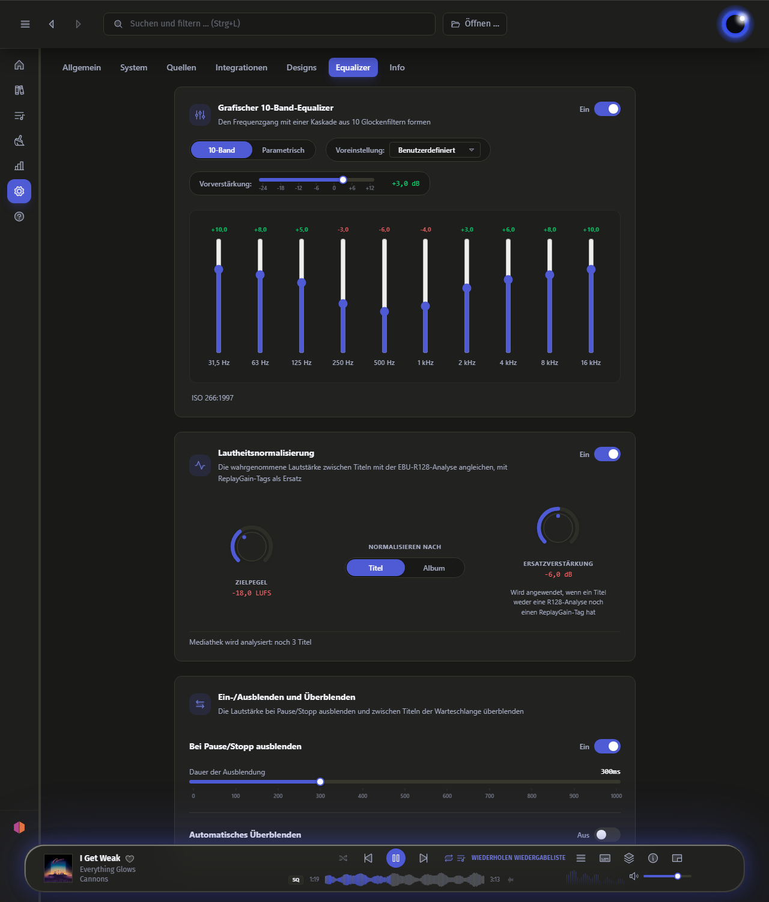
Parametrisch
•
Einen Knoten ziehen, um Frequenz und Verstärkung festzulegen. Darauf scrollen, um ihn breiter oder schmaler zu machen (Q).
•
Doppelklick auf das Diagramm fügt ein Band hinzu, bis zu 20. Die Tabelle darunter listet Typ, Werte und Ein/Aus-Schalter jedes Bands.
•
Bänder zurücksetzen stellt wieder linear ein.
•
Das Menü ⋯ neben der Voreinstellung enthält die Aktionen für Voreinstellungen:
– Importieren … lädt ein Kopfhörer-Korrekturprofil (siehe unten).
– Exportieren … speichert die Bänder und die Vorverstärkung als Equalizer-APO-Datei.
– Speichern unter … behält die aktuellen Bänder als eigene Voreinstellung unter Meine Voreinstellungen.
– Umbenennen und Löschen verwalten die eigenen Voreinstellungen.
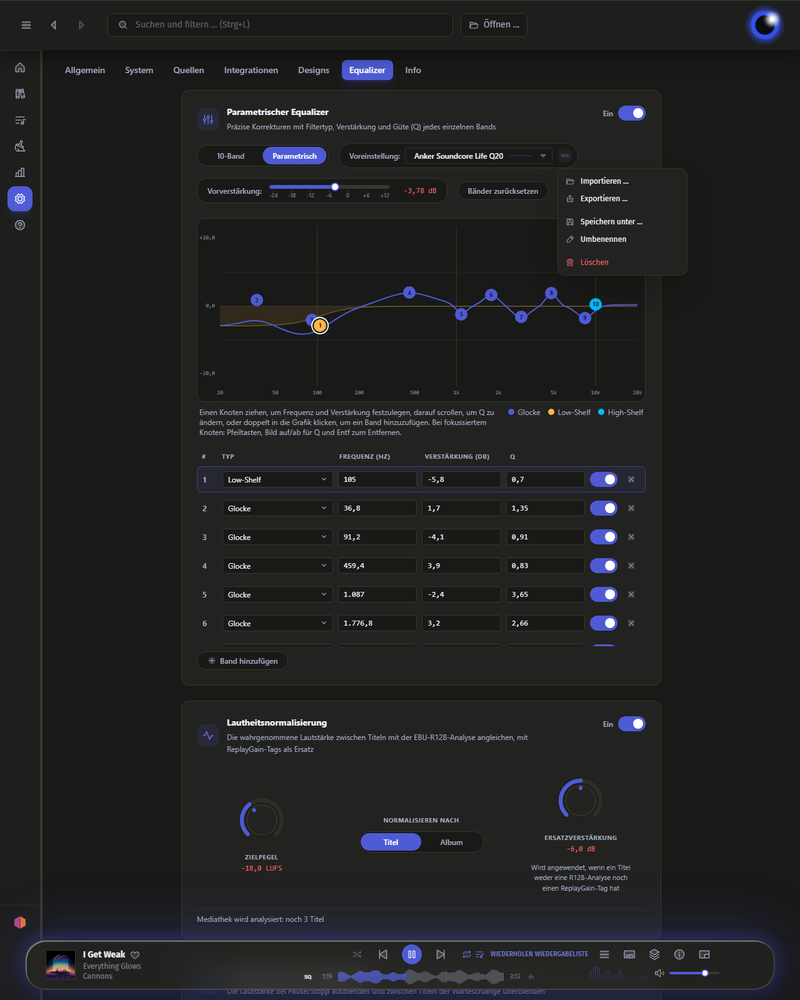
Kopfhörer korrigieren
•
Auf AutoEq: Die Kopfhörer suchen, EqualizerAPO ParametricEq als Equalizer-App wählen und die Einstellungsdatei herunterladen.
•
Im Modus Parametrisch im Menü ⋯ die Option Importieren … wählen, dann Datei auswählen … oder den Text einfügen.
•
Das Profil wird unter Meine Voreinstellungen gespeichert und sofort angewendet. Kann Luminous es nicht exakt nachbilden, nennt es die fehlerhafte Zeile und ändert nichts.
Lautheitsnormalisierung
•
Einschalten, um die Lautstärke zwischen Titeln auszugleichen.
•
Zielpegel legt fest, wie laut alles wiedergegeben wird.
•
Mit Normalisieren nach auf Album bleiben die Lautstärkeunterschiede zwischen Titeln desselben Albums erhalten.
•
Titel, die noch nicht analysiert wurden, verwenden ihre ReplayGain-Tags oder die Ersatzverstärkung.
Ein-/Ausblenden und Überblenden
•
Bei Pause/Stopp ausblenden senkt die Lautstärke allmählich, statt sie abzuschneiden.
•
Manuelles Überblenden blendet Titel beim Überspringen ineinander; Automatisches Überblenden blendet sie ineinander, wenn ein Titel endet.
•
Lückenlose Wiedergabe innerhalb eines Albums beibehalten hält Live- und Konzeptalben nahtlos.
Einstellungen
Designs der Oberfläche
Ein Design wählen
•
Luminous färbt die gesamte App nach dem Cover des gerade gespielten Albums. Gefällt ein Ergebnis? Als eigenes Design speichern.
•
System folgt deiner Einstellung für helles oder dunkles Design. Mit den Schaltflächen Hell, Dunkel und System auf seiner Karte lässt sich eines festlegen.
•
Auf ein beliebiges vordefiniertes Design klicken, um es zu verwenden.
Designs für Unterstützer (Add-ons) – nur in der Microsoft-Store-Version
•
Zusätzliche Designs mit eigener Grafik und Animation. Auf die Schaltfläche der Karte (Für … kaufen, Kostenlos kaufen oder Holen) klicken, um eines hinzuzufügen, dann auf die Karte klicken, um es zu verwenden.
•
Kauf nicht zu sehen? Auf Käufe prüfen klicken.
•
Add-on-Designs behalten ihre eigenen Farben; sie lassen sich nicht bearbeiten.
Ein eigenes Design erstellen
•
Den Editor für eigene Designs öffnen, um eigene Farben festzulegen.
•
Mit Design importieren ein Design aus einer Datei hinzufügen. Jede Karte eines eigenen Designs kann bearbeitet, exportiert oder gelöscht werden.
Bewegung
•
Ist die Einstellung des Systems zum Reduzieren von Bewegung eingeschaltet, werden Gleitanimationen zu sanften Überblendungen.
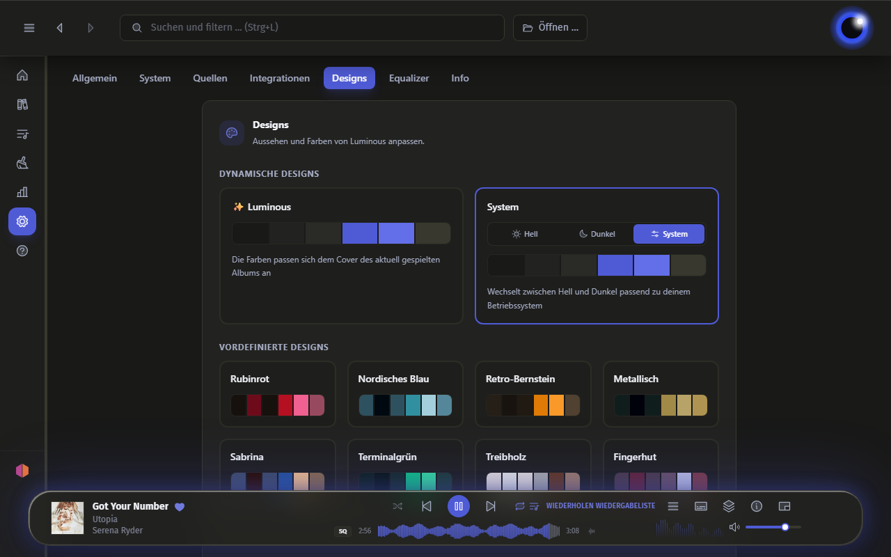
Tipps & Tricks
Tastenkürzel
Wiedergabe
Leertaste
Wiedergabe / Pause
←
Vorheriger Titel
→
Nächster Titel
↑
Lauter
↓
Leiser
Bild ↑
10 s zurückspulen
Bild ↓
10 s vorspulen
Navigation
StrgL
Suchleiste fokussieren
Esc
Such-Dropdown schließen
StrgO
Titel öffnen
Strg[
Zurück
Strg]
Vor
StrgA
Alles auswählen in der aktuellen Listenansicht
Layout & Ansicht
Strg1
Linke Seitenleiste ein- oder ausblenden
Strg2
Immersiven Modus umschalten
Strg3oderStrgI
Infobereich ein- oder ausblenden
StrgM
Miniplayer umschalten
Strg,
Einstellungen öffnen
Strg/
Diese Liste anzeigen
Maus-Seitentasten und spezielle Browser-Tasten für Zurück und Vor navigieren ebenfalls im Verlauf. Medientasten auf Tastatur oder Gerät steuern ebenfalls die Wiedergabe.
Einstellungen
Info & Danksagungen
Der Quellcode liegt auf GitHub, mit den Danksagungen für jede von Luminous verwendete Bibliothek und der Lizenz, unter der es geteilt wird.
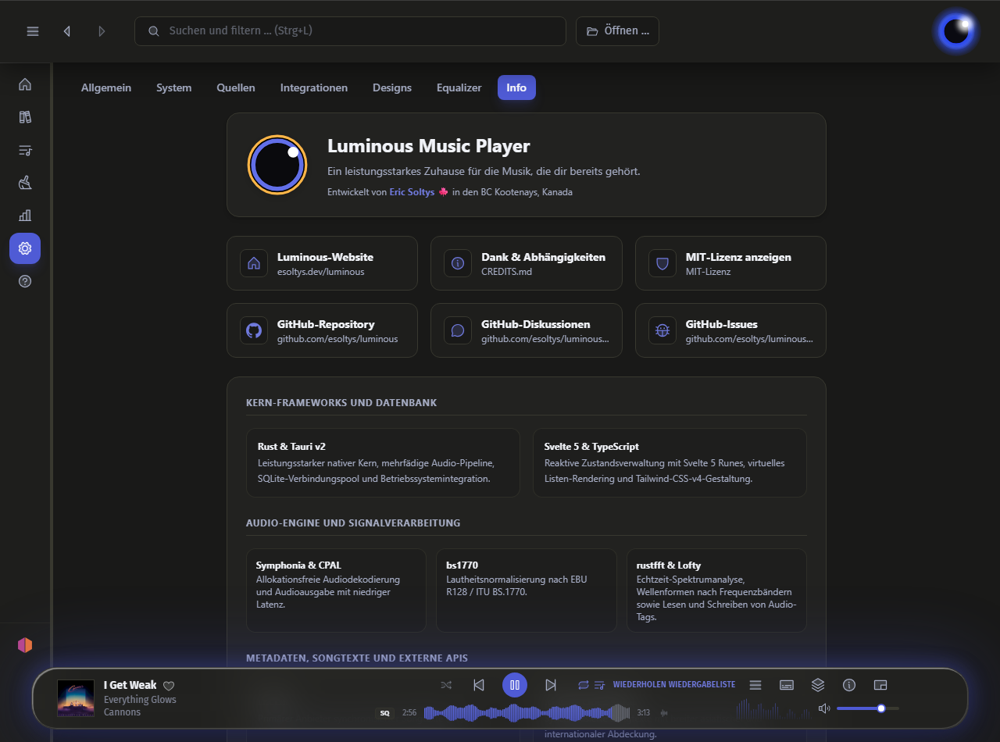
Tipps & Tricks
Kontextmenüs & Mehrfachauswahl
•
Mit der rechten Maustaste auf einen Titel klicken für Abspielen, Zur Wiedergabeliste hinzufügen, Zum Interpreten, Zum Album, Tags bearbeiten und mehr.
•
Mit der rechten Maustaste auf ein Album klicken für Album abspielen, Zur Warteschlange hinzufügen, Albuminfo bearbeiten, In Picard öffnen, Teilen-Karte ..., An Start anheften und Nicht in Statistik einbeziehen.
•
Mit Umschalt-Klick einen Bereich auswählen, mit Strg-Klick Zeilen hinzufügen und mit StrgA alles in der Liste auswählen.
•
Bei ausgewählten Titeln bietet eine Symbolleiste Ausgewählte abspielen, Zur Wiedergabeliste hinzufügen und Auswahl aufheben.